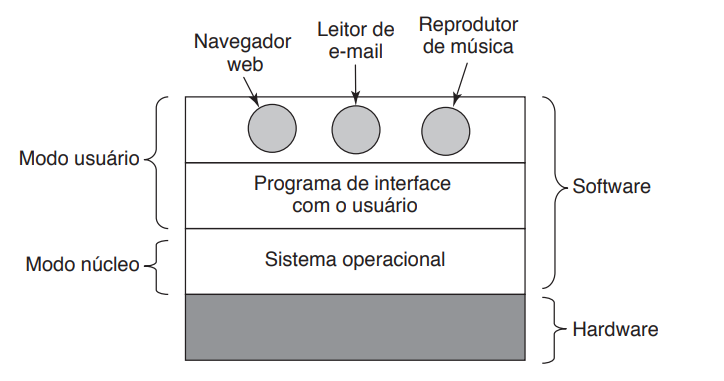
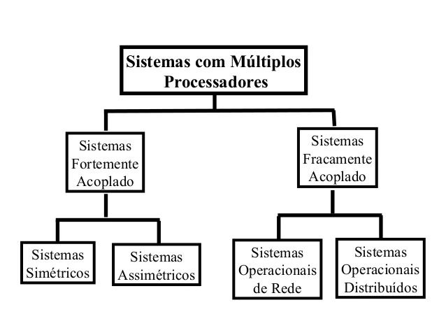

Projetos
Aqui estão alguns dos projetos mais importantes que tive a oportunidade até agora..


Grade curricular
Explore alguns dos projetos que desenvolvemos durante as disciplinas técnicas do curso.


Sobre mim
Será apresentado minha trajetória.
-

2020-2022
Período do Técnico
Conquistei a formação do em Técnico em Análise de Sistemas, com grandes aprendizados, conheci grandes amigos nesse tempo e desenvolvi muitas habilidas.
-

2023-2024
Cursando Faculdade
Estou cursando Análise e Desenvolvimento de Sistemas na FATEC-JALES, buscando desenvolver habilidades e conhecimentos.
-

15 de maio de 2023
Estágio na Precisão Sistemas
Tive a oportunidade de participar do processo seletivo realizado pela empresa Precisão Sistemas, oferecendo vaga de estágio remunerado, fui selecionado, uma grande felicidade para mim, um projeto inovador.
-
Continua...
Contato
Preencha o formulário para entrar em contato comigo.
SIGOM
Sistema de Gerenciamento de Oficina Mecânica.
Este projeto foi escolhido pois a alta demanda de veículos e tecnologias no mercado se encontra de forma crescente ano após ano, pensando nesse fator, foi proposto um sistema que gerencia a oficina mecânica desde as tarefas simples, como: Cadastros de clientes, veículos, produtos, estoque, até automatizar algumas tarefas.
- Link do Projeto
- Desenvolvido: 2022
appGuigas
Gerenciandor de Oficinas Mecânicas - Mobile.

Este projeto está sendo desenvolvido na aula de React-Native com o intuito de aprendizado
- Link do Projeto
- Em Desenvolvimento 2023
SIGED
Sistema de Gerenciamento de Documentos.
Será desenvolvido um projeto Interdisciplinar para a prefeitura de Jales com a parceria da empresa Precisão Sistemas, onde o munícipe irá requisitar a aprovação da sua obra e os cargos respectivos da prefeitura irá fazer a análise se pode ou não.
- Link do Projeto
- Em desenvolvimento: 2023-2024
Engenharia de Software
A engenharia de software visa aplicar princípios sistemáticos para desenvolver software eficiente e confiável, garantindo que os sistemas criados sejam robustos, entregues no prazo, dentro do orçamento e atendam às necessidades dos usuários.
Diagrama de Classe

Um diagrama de classe é uma ferramenta visual usada na programação orientada a objetos para representar a estrutura e as relações entre as classes em um sistema. Aqui estão os principais elementos:
Classe: Representa um conceito do sistema, podendo ter variáveis(atributos) e funções (métodos).
Atributo: É uma característica de uma classe, como o nome e tipo de dado.
Método: É uma operação que uma classe pode realizar, como funções ou procedimentos.
Relações: As relações podem ter diversos tipos como Associação, Herança e Agregação e Composição.
Visibilidade: Define quem pode acessar os atributos e métodos (público, privado, protegido).
Diagrama de Casos de Uso

Um diagrama de caso de uso é uma representação visual que descreve as interações entre diferentes atores (usuários ou sistemas externos) e um sistema. Aqui está uma explicação resumida:
Ator: Representa um usuário ou sistema que interage com o sistema.
Caso de Uso: Descreve uma funcionalidade específica do sistema que proporciona valor a um ator.
Associação: Linhas conectam atores aos casos de uso para mostrar quem está envolvido em cada interação.
Sistema: Representado por um retângulo, englobando todos os casos de uso.
Inclusão ou Extensão: Indicam relacionamentos entre casos de uso, onde um caso de uso pode incluir ou estender outro.
Diagrama de Sequência

Um diagrama de sequência é uma representação visual que mostra a interação entre objetos em uma determinada sequência de tempo. Aqui está uma explicação resumida:
Objeto: Representa uma entidade ou instância que desempenha um papel na interação.
Linha de Vida: Uma linha vertical que representa a existência ao longo do tempo de um objeto participante na interação.
Mensagens: São setas horizontais indicam mensagens trocadas entre os objetos, podendo ser síncronas (representadas por uma linha contínua) ou assíncronas (representadas por uma linha pontilhada).
Ativação e Desativação: Linhas tracejadas ou sólidas na linha de vida mostram quando um objeto está ativo (enviado ou recebendo mensagens) ou inativo.
Estruturas de Dados
Lista 1 - Introdução a Estrutura de Dados

Nesta primeira lista de exercícios, focamos na revisão de conceitos de algoritmos, com ênfase em entrada e saída.
Link do Repositório: https://github.com/Gui-Angelo-Silva/Estrutura-de-Dados-C-Introducao
Lista 2 - Exercícios Sobre Estrutura Condicional
Essas estruturas condicionais permitem verificar condições e ajustar o fluxo de execução do algoritmo, possibilitando a definição de ações específicas para diferentes cenários. Essa capacidade é fundamental para alcançar resultados precisos no desenvolvimento de sites e aplicações.
Link do Repositório: https://github.com/Gui-Angelo-Silva/Estrutura-de-Dados-C-Condicional
Lista 3 - Exercícios Sobre Laço de Repetição
Um laço de repetição, também conhecido como loop, é uma estrutura de programação que executa um bloco de código repetidamente enquanto uma condição específica for verdadeira. Ele permite automatizar tarefas repetitivas, melhorando a eficiência do código. Existem diferentes tipos de loops, como o "for", "while" e "do-while", cada um com sua aplicação específica.
Link do Repositório: https://github.com/Gui-Angelo-Silva/Estrutura-de-Dados-C-Laco
Lista 4 - Exercícios Sobre Função

Uma função em programação é um bloco de código designado para realizar uma tarefa específica. Ela é definida uma vez e pode ser chamada (invocada) várias vezes no programa. As funções ajudam a organizar o código, promovendo a reutilização e a modularidade, além de simplificar a compreensão do programa ao dividir tarefas em partes menores e mais gerenciáveis.
Link do Repositório: https://github.com/Gui-Angelo-Silva/Estrutura-de-Dados-C-Funcao
Lista 5 - Exercícios Sobre Matriz e Vetor

Em programação, um vetor (ou array) é uma coleção ordenada de elementos do mesmo tipo, acessados por índices. Ele armazena dados de forma sequencial.
Uma matriz é uma estrutura bidimensional que organiza elementos em linhas e colunas, formando uma tabela. Cada elemento é acessado por dois índices: um para a linha e outro para a coluna. Matrizes são úteis para representar dados tabulares e tabelas bidimensionais.
Link do Repositório: https://github.com/Gui-Angelo-Silva/Estrutura-de-Dados-C-Matriz
Pilha e Fila

Foi conduzida uma atividade avaliativa para reforçar os conceitos de pilha e fila, na qual os participantes foram desafiados a implementar essas estruturas de dados. O objetivo era criar um código que permitisse ao usuário decidir quais operações realizar, proporcionando uma experiência prática na manipulação dessas estruturas durante a execução do programa.
Pilha: Uma pilha é uma estrutura de dados linear que segue o princípio LIFO (Last In, First Out), onde o último elemento inserido é o primeiro a ser removido. Elementos são adicionados (empilhados) e removidos (desempilhados) apenas do topo da pilha.
Fila: Uma fila é uma estrutura de dados linear que segue o princípio FIFO (First In, First Out), onde o primeiro elemento inserido é o primeiro a ser removido. Elementos são adicionados (enfileirados) no final da fila e removidos (desenfileirados) do início da fila.
Link do Repositório: https://github.com/Gui-Angelo-Silva/Estrutura-de-Dados-Pilha-Fila
Árvore AVL

Uma árvore AVL (Adelson-Velsky e Landis) é uma estrutura de dados de árvore binária de busca balanceada. A característica principal é que a diferença de altura entre as subárvores esquerda e direita de qualquer nó (fator de balanceamento) é mantida em um intervalo específico, geralmente -1, 0 ou 1. Isso garante uma busca eficiente e operações de inserção e remoção rápidas, mantendo a árvore praticamente balanceada. Caso a árvore se torne desbalanceada após uma operação, são realizadas rotações para restaurar o equilíbrio.
Link do Repositório: https://github.com/Gui-Angelo-Silva/ams-avl-tree
Gestão Ágil de Projetos
O que é Gestão Agil de Projetos?
A gestão ágil de projetos é uma abordagem flexível e colaborativa para gerenciar projetos, enfatizando entregas incrementais, adaptação a mudanças, e colaboração intensa entre equipes e clientes. Métodos ágeis, como Scrum ou Kanban, priorizam a entrega contínua de valor ao cliente, dividindo o projeto em iterações (sprints), promovendo a transparência e ajustes frequentes com base no feedback. O foco está na resposta rápida a mudanças e na maximização da eficiência e qualidade ao longo do tempo.
Durante o ano, utilizamos o Azure DevOps em conjunto com a metodologia SCRUM para auxiliar o desenvolvimento do Projeto Integrador.
O Azure DevOps é uma plataforma da Microsoft que fornece um conjunto integrado de ferramentas para gerenciamento de código-fonte, build, teste, entrega contínua e colaboração em equipes de desenvolvimento de software. Ele suporta o ciclo de vida completo do desenvolvimento de software, desde o planejamento até a implantação, facilitando a automação de processos e a colaboração eficiente entre desenvolvedores e equipes de operações.
Metodologia Scrum

O Scrum é uma metodologia ágil de gestão de projetos que enfatiza entregas incrementais e iterativas. Ele divide o desenvolvimento em ciclos chamados sprints, nos quais equipes trabalham em funcionalidades prioritárias. O Scrum promove colaboração intensa, transparência e adaptação contínua, com papéis definidos, como Scrum Master, Product Owner e equipe de desenvolvimento, para otimizar a eficiência e a entrega de valor ao cliente.
Interação Humano Computador - IHC
Objetivo desta matéria
O objetivo da Interação Humano-Computador (IHC) é projetar e melhorar a interação entre seres humanos e sistemas computacionais, visando tornar essa interação eficiente, intuitiva e satisfatória para os usuários. A IHC busca facilitar a utilização de tecnologias, garantindo uma experiência positiva, acessível e adaptada às necessidades dos usuários.
Ao longo do ano, foram criados alguns protótipos como exercício prático das concepções abordadas durante as aulas, utilizando a ferramenta Figma.

O Figma é uma ferramenta de design colaborativo baseada em nuvem, utilizada para criar interfaces de usuário, protótipos e designs interativos. Ele permite que várias pessoas colaborem simultaneamente em um projeto, oferecendo recursos de design em tempo real e facilitando a comunicação entre membros de uma equipe. O Figma é amplamente utilizado para o desenvolvimento de aplicativos e websites, proporcionando eficiência e flexibilidade no processo de design.
OGuicário

Durante uma atividade dada em sala de aula, realizei o desenvolvimento do aplicativo
OGuicário, voltado
para perfumaria. A loja é conhecida por receber feedbacks positivos, e o design do
aplicativo, realizado no Figma, destaca-se por sua visualização limpa e agradável.
Para acessar o projeto
Clique
Aqui
Projeto Integrador I
Entrevista com o Cliente
O Projeto Integrador I no nosso curso trouxe uma abordagem inovadora ao trazer um desafio real para dentro da faculdade em conjunto com a parceria da empresa Precisão Sistemas. Isso proporciona uma oportunidade única para abordarmos questões práticas e oferecer soluções concretas.
Sistema de Gerenciamento de Documentos - SGED
No projeto em que estou
envolvido, estamos focados em desenvolver um sistema que gerencie todos os
documentos de obras aprovados pela Prefeitura de Jales.
Anteriormente, a prefeitura contava com um sistema semelhante, mas que ficou
desatualizado e acabou caindo em desuso. Portanto, aproveitando tecnologias
recentes, estamos iniciando o desenvolvimento de um novo sistema. Optamos por
utilizar uma abordagem Web API, implementada em C# e conectada com React para a
interface do usuário. O banco de dados escolhido para armazenar as informações é o
PostgreSQL.
Nosso objetivo vai além de apenas atender aos requisitos técnicos; buscamos oferecer
uma solução moderna e eficiente que não só simplifique o gerenciamento de documentos
de obras, mas também contribua para superar os desafios enfrentados por
profissionais envolvidos nesse processo. Estamos comprometidos em entregar um
sistema de qualidade que faça a diferença na otimização dessas atividades.
Link do Repositório: https://github.com/Gui-Angelo-Silva/ProjetoIntegrador
Banco de Dados
Técnicas Avançadas de Banco de Dados Relacional e Não Relacional
Um Banco de Dados é um sistema organizado para armazenar e gerenciar informações de forma estruturada. Ele permite a criação, atualização, leitura e exclusão de dados de maneira eficiente. Esses dados podem variar desde informações simples até conjuntos complexos de dados inter-relacionados. O principal objetivo é proporcionar um meio para a recuperação rápida e precisa de informações, facilitando o acesso e manipulação dos dados de forma organizada.
Conceitos Adquiridos
Inner Join: Uma cláusula que facilita a união de duas ou mais
tabelas, contanto que haja relação entre todas elas.
View: Uma abordagem alternativa para visualizar dados de uma ou
mais entidades (tabelas) em um banco de dados. Pode ser considerada uma tabela
virtual ou uma consulta armazenada.
Trigger: Uma estrutura no banco de dados que age como uma função
acionada por determinadas ações, geralmente relacionadas a operações de inserção,
exclusão e atualização de dados.
Procedures: Stored Procedure, ou Procedimento Armazenado, é uma
coleção de comandos SQL armazenada para uso no banco de dados. Armazena tarefas
repetitivas e pode aceitar parâmetros para personalização da execução.
SubConsulta: Uma instrução SELECT (SELECT... FROM... WHERE...)
incorporada em outra instrução SELECT, podendo ser utilizada também em instruções
INSERT, DELETE e UPDATE como parte da cláusula WHERE.
Banco de Dados Utilizados

O SQL Server é um sistema de gerenciamento de banco de dados relacional desenvolvido pela Microsoft. Ele fornece um ambiente robusto para armazenamento, recuperação e manipulação eficiente de dados. O SQL Server suporta a linguagem SQL e oferece recursos abrangentes para administração, segurança e integração com outras tecnologias Microsoft. É amplamente utilizado em ambientes corporativos para gerenciar dados de forma escalável e confiável.
O SQL Server é um sistema de gerenciamento de banco de dados relacional desenvolvido pela Microsoft. Ele fornece um ambiente robusto para armazenamento, recuperação e manipulação eficiente de dados. O SQL Server suporta a linguagem SQL e oferece recursos abrangentes para administração, segurança e integração com outras tecnologias Microsoft. É amplamente utilizado em ambientes corporativos para gerenciar dados de forma escalável e confiável.
Técnicas Avançadas de Programação
Projetos Desenvolvidos

Ao longo do ano, diversos projetos foram concebidos nesta disciplina, todos implementados utilizando a linguagem de programação C# e a IDE Visual Studio. Para armazenar as informações registradas nos projetos, optamos pelo banco de dados PostgreSQL. Abaixo, estão os links para cada projeto desenvolvido durante este período.
Algoritmo: https://github.com/Gui-Angelo-Silva/Trabalho-Alg-CSharp
Lanchonete: https://github.com/Gui-Angelo-Silva/Lanchonete
Biblioteca: https://github.com/Gui-Angelo-Silva/Tecnicas-Avancadas-de-Programacao/tree/main/AtividadeCRUDCsharp
Locadora de Carro: https://github.com/Gui-Angelo-Silva/Tecnicas-Avancadas-de-Programacao/tree/main/LocacaoCarro
Herança: https://github.com/Gui-Angelo-Silva/Tecnicas-Avancadas-de-Programacao/tree/main/ExemploHeranca
Abaixo irei deixar as tecnologias que foram utilizadas.
Visual Studio

O Visual Studio é um ambiente de desenvolvimento integrado (IDE) da Microsoft, amplamente utilizado para criar, depurar e gerenciar projetos de software. Oferece suporte a várias linguagens de programação, incluindo C#, C++, e F#, e fornece ferramentas abrangentes para facilitar o desenvolvimento de aplicativos Web, desktop e móveis. O Visual Studio inclui recursos como depuração visual, Intellisense (sugestões de código), ferramentas de design de interface gráfica, e integração com sistemas de controle de versão, proporcionando uma plataforma completa para o ciclo de vida do desenvolvimento de software.
Linguagem C#

C# (pronuncia-se "C sharp") é uma linguagem de programação desenvolvida pela Microsoft. Ela faz parte da plataforma .NET e é projetada para criar aplicativos Windows, aplicativos web e outros tipos de software. O C# combina elementos de linguagens como C e C++ com recursos de programação orientada a objetos. Ele é amplamente utilizado no desenvolvimento de software empresarial e é conhecido por sua segurança, eficiência e integração com as tecnologias da Microsoft.
Técnicas Avançadas de Programação Web e Mobile

Objetivo: Desenvolver aplicações por meio da utilização de abordagens em Interface, Eventos, Props, State, Navegação, Multimídia, Notificações, Persistência de Dados, Experiência do Usuário (UX), Serviços RESTFul e Integrações. Além disso, aplicar práticas de versionamento e elaborar a documentação da aplicação. Abaixo irei citar os frameworks trabalhados ao longo do ano.

React Native é um framework de desenvolvimento de aplicativos móveis que permite criar aplicações nativas para iOS e Android usando JavaScript e React. Ele permite o desenvolvimento de aplicativos móveis com uma base de código compartilhada, facilitando a manutenção e a implementação de novos recursos em ambas as plataformas de forma eficiente.

Flutteré um framework de código aberto desenvolvido pelo Google para a criação de aplicativos nativos para dispositivos móveis, web e desktop a partir de uma única base de código. Utilizando a linguagem de programação Dart, o Flutter permite uma experiência de desenvolvimento rápida e oferece uma interface de usuário altamente personalizável, resultando em aplicativos visualmente atraentes e de alto desempenho.
Projetos Realizados
AppGuigas:
Este foi meu projeto inaugural no início do ano, centrado em uma loja de peças
automotivas. Nele, os usuários tinham a capacidade de cadastrar e gerenciar seu
inventário de peças, funcionando como uma plataforma de gestão.
Link do Repositório: https://github.com/Gui-Angelo-Silva/appGuigas
AnotaFilm:
O propósito deste projeto consistiu em registrar informações sobre filmes, sendo
implementado por meio do framework Flutter em conjunto com o banco de dados SQLite.
Link do Repositório: https://github.com/Gui-Angelo-Silva/AulaBoer
CRUDFirestore:
Este projeto foi criado para explorar novas ferramentas, utilizando o Firestore em
integração com o Flutter.
Link do Repositório: https://github.com/Gui-Angelo-Silva/Projeto-Crud-Firestore
Sistemas Operacionais
Organização de Computadores e Sistemas Operacionais

Entender os conceitos de funções racionais, trigonométricas, exponenciais e logarítmicas é essencial para aplicá-los no desenvolvimento de programas computacionais. Além disso, o conhecimento e uso da teoria de conjuntos e subconjuntos são fundamentais no desenvolvimento de bancos de dados. A aplicação de relações binárias, equivalentes e de ordem é crucial para propor soluções em aplicações e sistemas durante o desenvolvimento de algoritmos.
Geração de Computadores

Primeira Geração (Década de 1940): Caracterizada por válvulas
eletrônicas, com o exemplo nótavel do ENIAC.
Segunda Geração (Década de 1950): Introduziu os transistores,
reduziu seu tamanho e aumento de confiabilidade e o surgimento de linguagem de
programação de alto nível.
Terceira Geração (Década de 1960): Utilização de circuitos
integrados, houve melhorias na eficiência e redução de custos e também o surgimento
dos microcomputadores.
Quarta Geração (Década de 1970): Os microprocessadores foram
introduzidos, computadores pessoais tornaram-se possíveis e os avanços
significativos em termos de portabilidade.
Quinta Geração (Década de 1980): Enfoque em inteligência
artificial, pesquisa intensiva em processadores paralelos e o desenvolvimento de
linguagens de programação avançadas.
Atualidade: Inovações contínuas em hardware e software, exploração
de tecnologias emergentes como inteligência artificial, aprendizado de máquina,
computação quântica e redes neurais com o crescimento da computação em nuvem e
Internet das Coisas (IoT).
Sistemas Numéricos
Sistemas numéricos em sistemas operacionais referem-se à representação e manipulação de dados usando diferentes bases numéricas, como binária, octal, decimal e hexadecimal. Os sistemas operacionais realizam operações aritméticas e lógicas nesses diferentes sistemas, sendo a base binária fundamental para a comunicação direta com a arquitetura de hardware dos computadores. A capacidade de converter entre sistemas numéricos é essencial para processamento eficiente de dados e comunicação entre hardware e software nos sistemas operacionais.
Memória
A memória em sistemas operacionais refere-se ao espaço onde dados e programas são
armazenados temporariamente para execução. Existem duas principais categorias de
memória:
1 - Memória Principal (RAM): Utilizada para armazenar dados e
programas em execução, possui volatilidade, ou seja, os dados são perdidos quando o
sistema é desligado e o sistema operacional gerencia o acesso à memória RAM para
garantir o funcionamento eficiente dos programas.
2 - Memória Secundária (Disco, SSD, etc.): Usada para armazenamento
de longo prazo, não é volátil, mantendo os dados mesmo quando o sistema é desligado
e o sistema operacional gerencia a transferência de dados entre a memória principal
e a memória secundária por meio de técnicas como paginação e segmentação.
Sistemas Operacional
Foram abordados conceitos essenciais de Sistemas Operacionais, incluindo a distinção entre Modo Kernel e Modo Usuário, que refere-se às diferentes permissões de execução. Além disso, discutiu-se a evolução dos computadores ao longo do tempo e mencionaram-se diversos tipos de Sistemas Operacionais, evidenciando a diversidade de sistemas que atendem às necessidades específicas dos usuários e das plataformas. Essa visão abrangente proporciona uma compreensão inicial das bases e variedades dos Sistemas Operacionais.
Processos

Em sistemas operacionais, um processo é uma instância em execução de um programa. Ele consiste no código do programa, dados associados e o contexto de execução. Um processo tem seu próprio espaço de memória e recursos, sendo gerenciado pelo sistema operacional. O sistema operacional coordena a execução de múltiplos processos, permitindo a multitarefa. Cada processo pode estar em diferentes estados, como pronto, em execução ou bloqueado, dependendo de sua interação com recursos do sistema. O conceito de processos é fundamental para a eficiente execução de tarefas e o compartilhamento de recursos em um ambiente computacional.
Thread
Uma thread em sistemas operacionais é a menor unidade de execução dentro de um processo. Ela compartilha o mesmo espaço de memória e recursos do processo pai, mas possui seu próprio contador de programa e conjunto de registradores. Threads possibilitam a execução concorrente dentro de um processo, permitindo tarefas paralelas. Existem dois tipos principais de threads: threads de usuário e threads de kernel. As threads são gerenciadas pelo sistema operacional e são essenciais para a eficiência em tarefas multitarefa, facilitando a execução simultânea de operações dentro de um único processo.
Sincronização

A sincronização em sistemas operacionais refere-se à coordenação de atividades entre processos ou threads para evitar conflitos e garantir a consistência dos dados. Mecanismos de sincronização, como semáforos, mutexes e monitores, são utilizados para controlar o acesso concorrente a recursos compartilhados. Isso previne condições de corrida e garante que operações críticas sejam executadas de forma ordenada, promovendo a integridade e coerência do sistema durante a execução concorrente de múltiplos processos ou threads.
Gerência do Processador

A gerência do processador em sistemas operacionais envolve a alocação eficiente do tempo de processamento entre os diversos processos em execução. O escalonador de processos é responsável por decidir qual processo deve ser executado em determinado momento, utilizando algoritmos de escalonamento. Isso visa otimizar o uso do processador, minimizar o tempo de espera dos processos e proporcionar uma execução equitativa. O escalonador pode ser preemptivo, interrompendo processos em execução para dar chance a outros, ou não preemptivo, permitindo que um processo complete sua execução antes de trocar para outro. Essa gestão é crucial para garantir a eficiência e a responsividade do sistema.
Gerenciamento de Memória Virtual

O gerenciamento de memória virtual em sistemas operacionais é uma técnica que permite aos programas executarem em espaços de endereço virtuais, que podem ser maiores que a quantidade física de RAM disponível. Isso é alcançado através do uso de páginas ou segmentos, que são movidos entre a memória RAM e o armazenamento secundário, como um disco rígido, conforme necessário. O sistema operacional decide quais partes do programa devem estar na memória RAM em um determinado momento, permitindo a execução eficiente de processos, mesmo quando a memória física é limitada. Esse gerenciamento otimiza o uso da memória e melhora a capacidade de resposta do sistema.
Sistema de Arquivos

O sistema de arquivos em sistemas operacionais é a estrutura utilizada para organizar e armazenar dados em dispositivos de armazenamento, como discos rígidos. Ele fornece métodos padronizados para a criação, leitura, gravação e exclusão de arquivos, além de gerenciar diretórios para organizar esses arquivos. O sistema de arquivos também é responsável pelo controle de permissões de acesso aos arquivos e pela manutenção de metadados, como datas de criação e modificação. Essa camada essencial facilita a interação entre o software e o hardware de armazenamento, garantindo a organização eficiente e o acesso confiável aos dados.
Gerência de Dispositivos
A gerência de dispositivos em sistemas operacionais envolve o controle e a coordenação das interações entre o software e os periféricos do hardware. Os drivers de dispositivos são responsáveis por traduzir as solicitações do sistema operacional para operações específicas do hardware. O gerenciador de dispositivos facilita a detecção, instalação e controle dos drivers, garantindo que os dispositivos conectados sejam reconhecidos e operem corretamente. Isso inclui a alocação de recursos, como interrupções e endereços de memória, além de lidar com eventos como falhas e desconexões. Uma eficiente gerência de dispositivos é crucial para o funcionamento adequado e a interoperabilidade dos componentes do sistema.
Sistema com Múltiplos Processadores
Sistemas operacionais que suportam múltiplos processadores, conhecidos como sistemas multiprocessadores, permitem a execução simultânea de vários processos em diferentes núcleos ou processadores físicos. Isso resulta em um aumento significativo no desempenho e na capacidade de processamento do sistema. O sistema operacional é responsável pelo escalonamento eficiente de tarefas entre os processadores, gerenciando a sincronização e a comunicação entre eles. O paralelismo oferecido por sistemas multiprocessadores é crucial para lidar com cargas de trabalho intensivas e otimizar a utilização dos recursos computacionais disponíveis.
I.C. e Modelos de Negócios na Era Digital
Desenvolver um modelo de negócios por meio da aplicação de metodologias inovadoras, utilizar ferramentas de mercado para a elaboração de um plano de negócios, aplicar as melhores práticas financeiras na execução de projetos, incorporar práticas tecnológicas avançadas na elaboração do plano de negócios, e empregar técnicas eficazes de resolução de problemas e colaboração em equipe.
Projeto Desenvolvido

O Pulse Blind é um smartwatch inovador projetado para aumentar a independência, segurança e conectividade de pessoas com deficiência visual em ambientes públicos. Este dispositivo transforma o relógio tradicional em um companheiro de navegação confiável, oferecendo recursos como GPS, Bluetooth e Wi-Fi para capacitar os usuários a navegar com confiança no mundo interconectado, principalmente dependendo do tato e da audição.